CSS 재사용
비슷한 레이아웃을 가진 페이지에는 특정 화면에만 묶이지 않는 클래스명을 사용해 스타일을 재사용합니다.
< Project Detail />
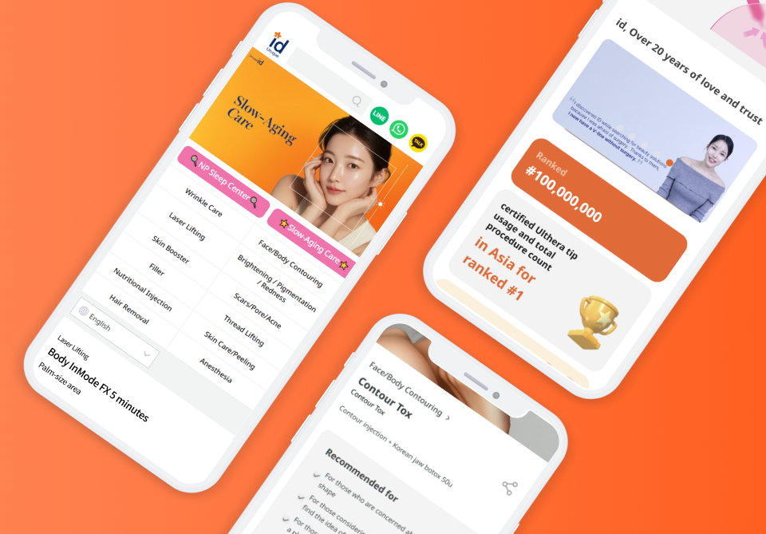
2024.08.02 — 2025.08.02
글로벌 시술 예약 시스템 및 웹 콘텐츠 페이지 구축
01 / DESIGN ANALYSIS & HTML
Tailwind·Bootstrap 같은 UI 라이브러리를 사용하지 않고, 전달받은 시안의 레이아웃과 UI를 그대로 구현해야 했습니다. 본격적인 마크업에 앞서 화면을 구성하는 요소를 기능과 역할에 따라 세분화하고, 반복되는 UI는 별도의 블록 단위로 구분했습니다.
이미지를 클릭하면 크게 볼 수 있어요.
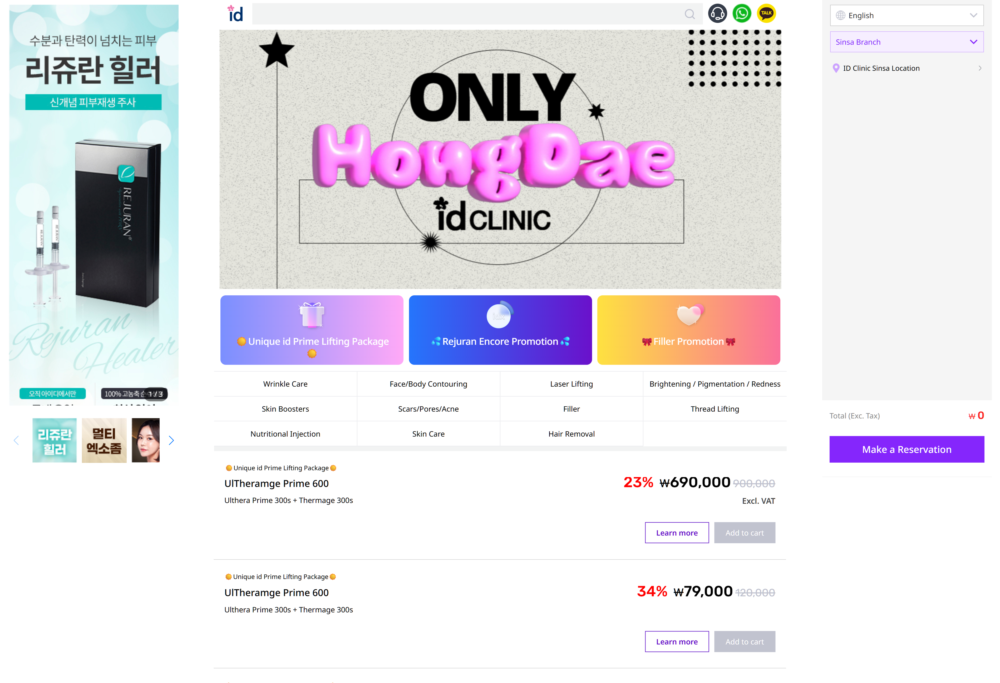
이미지를 클릭하면 크게 볼 수 있어요.
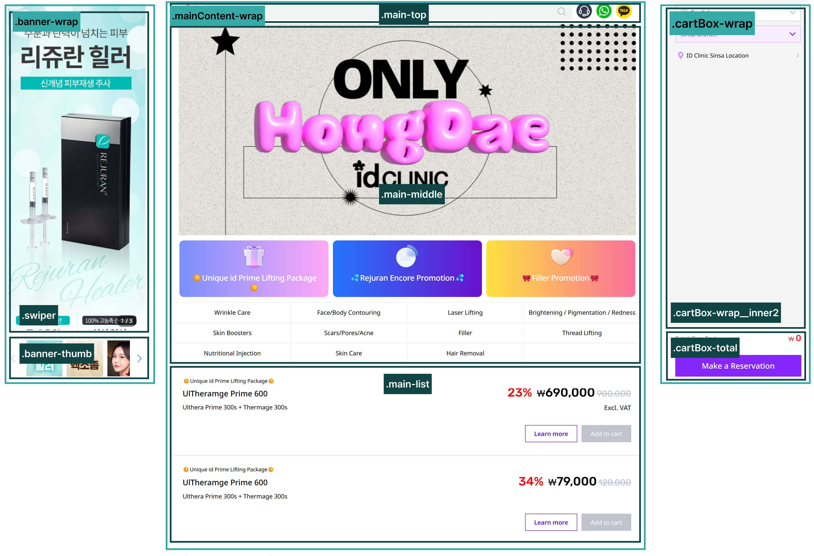
이미지를 클릭하면 크게 볼 수 있어요.
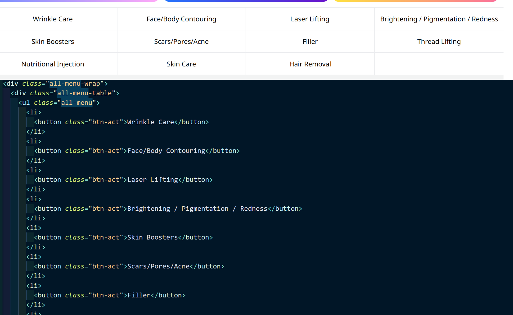
이미지를 클릭하면 크게 볼 수 있어요.
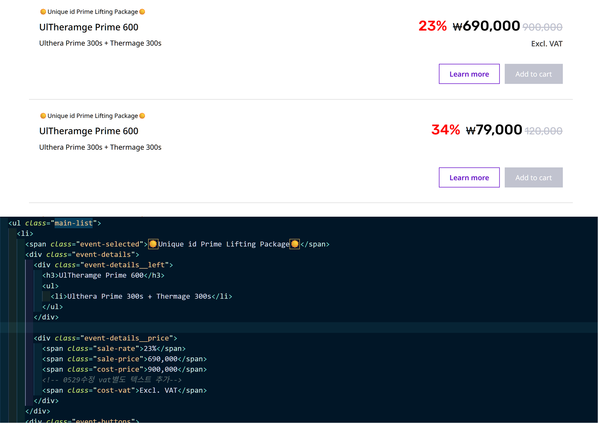
02 / STYLE & CLASS NAME
비슷한 레이아웃을 가진 페이지에는 특정 화면에만 묶이지 않는 클래스명을 사용해 스타일을 재사용합니다.
블록·요소·상태의 관계가 이름에서 읽히도록 BEM 방식으로 작성해 가독성과 계층 구조를 유지합니다.
이미지를 클릭하면 크게 볼 수 있어요.
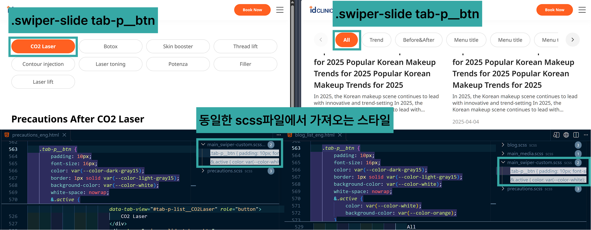
03 / INTERACTION
datepicker.js, swiper.js,
messenger.js처럼 기능단위로 파일을 분리하여 코드의
재사용성을 높이고, 유지보수가 용이하도록 구성하였습니다.
이미지를 클릭하면 크게 볼 수 있어요.
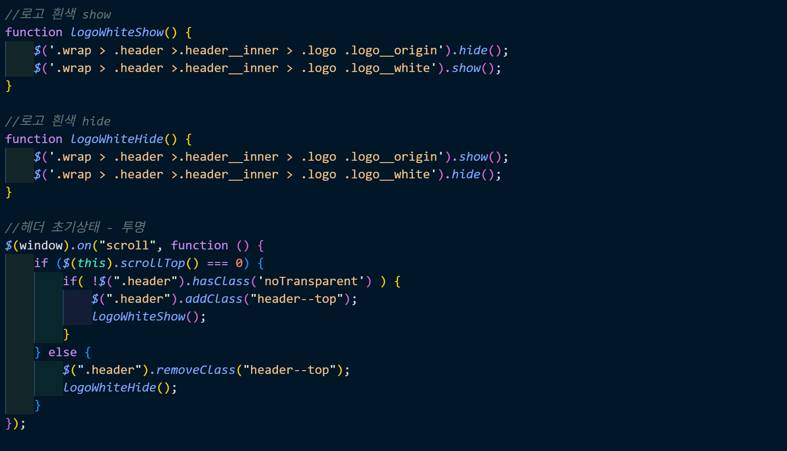
03-2 / INTERACTION
CSS hover만으로는 내부 스크롤에 가려지는 중메뉴 문제가 있어,
jQuery mouseenter 이벤트와 클래스 제어로 메뉴를
노출했습니다.
대메뉴 클릭 시 연결된 중메뉴로 이동하고, 중메뉴 스크롤 위치에 따라 현재 대메뉴가 활성화되도록 구현했습니다.
04 / RESPONSIVE & ACCESSIBILITY
미디어 쿼리로 화면 구조와 요소 크기를 조정하고, 이미지 대체 텍스트와 웹 표준을 점검합니다. 크로스브라우징 과정에서 확인한 내용은 프로젝트별로 기록합니다.
이미지를 클릭하면 크게 볼 수 있어요.
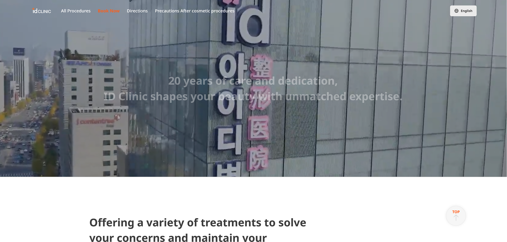
이미지를 클릭하면 크게 볼 수 있어요.
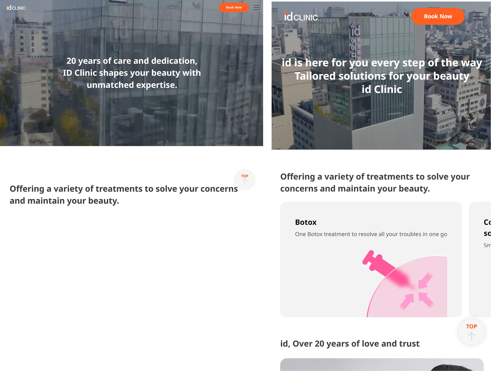
이미지를 클릭하면 크게 볼 수 있어요.
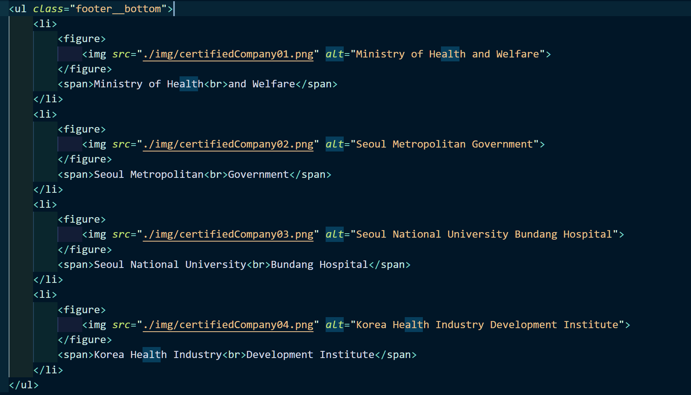
jQuery UI Datepicker가 생성하는 월 이동 링크를 분석해, 페이지
이동이 아닌 제어 기능에 맞게 button 요소로
수정했습니다. 기존 클래스와 동작은 유지했습니다.
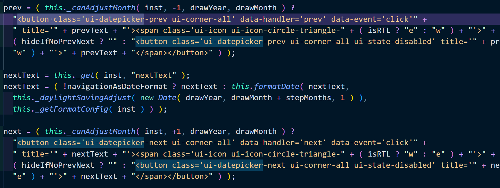
대규모 프로젝트를 지속적으로 유지보수하면서 여러 페이지에서 중복으로 사용되는 스타일이 많다는 점을 확인했습니다. 이를 개선하기 위해 SCSS 폴더를 base, components, pages로 세분화하고, 공통 스타일과 페이지별 스타일을 구분하여 관리한다면 코드 재사용성과 유지보수 효율을 높일 수 있다고 생각합니다. JavaScript 역시 이벤트 바인딩과 기능 로직을 분리하고, 기능별로 함수를 구성하여 작성한다면 수정이 필요한 부분을 빠르게 파악할 수 있습니다. 또한 공통 기능을 재사용할 수 있어 코드 관리와 유지보수 효율을 높일 수 있다고 생각합니다.
글로벌 유저를 위한 시술 예약 시스템과 콘텐츠 페이지를 구축한 프로젝트입니다. 시술 상세 페이지는 텍스트와 이미지를 분리한 시맨틱 마크업으로 구현하고, 다양한 디바이스 환경에 맞춰 반응형으로 작업했습니다.